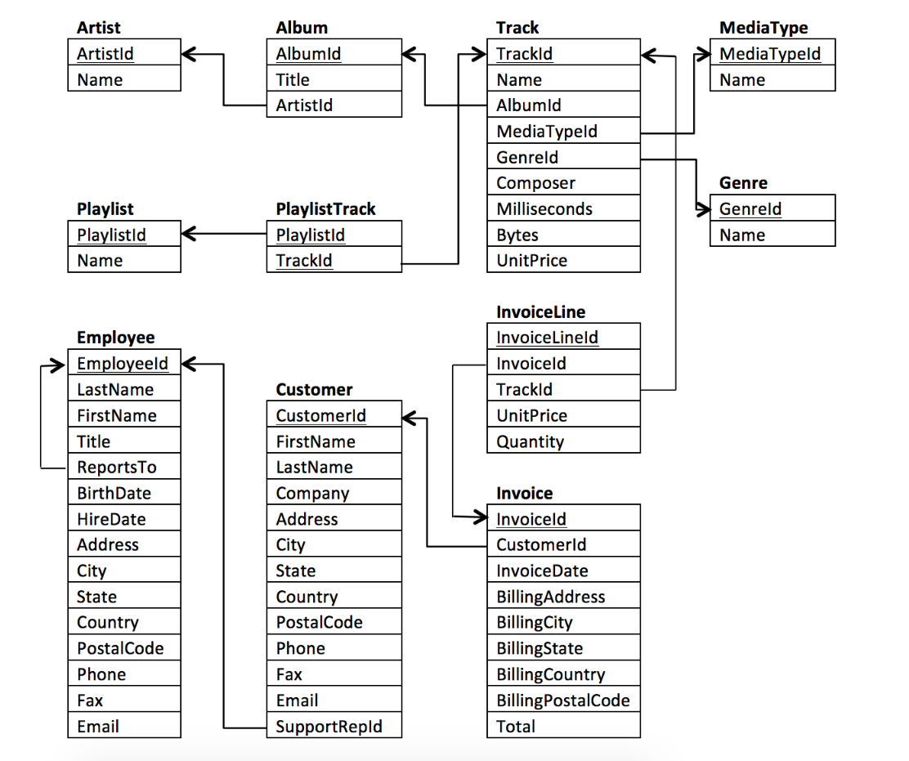

Digital Music Store Analysis

Unveiling the Future of Music: A SQL Project for a Digital Music Store
Introduction:
In the digital age, music has become more accessible than ever before. With just a few clicks, we can explore a vast library of songs and albums, create personalized playlists, and enjoy our favourite tunes anytime, anywhere. Behind this seamless experience lies the powerful technology of a digital music store, which relies on robust databases and efficient data management. In this blog post, we'll delve into a SQL project that showcases the inner workings of a digital music store, highlighting its key features and the importance of SQL in managing and analysing vast amounts of music-related data.
Database Structure:
The foundation of any digital music store lies in its well-designed database structure. A relational database management system (RDBMS) is employed to store and organize various entities related to music, such as artists, albums, songs, genres, and user information. The schema is carefully constructed using SQL, ensuring efficient data retrieval, scalability, and data integrity.
Entity Relationships and Queries:
The digital music store relies on multiple entity relationships to provide a seamless user experience. SQL queries play a crucial role in fetching relevant data based on user requests. Let's explore some essential queries used in the project:
1. Searching for Songs by Artist: Users can search for songs by their favourite artists. SQL queries with appropriate joins and filters help retrieve all songs associated with a specific artist or a group of artists, enabling users to explore their discography effortlessly.
2. Building Dynamic Playlists: Playlists are a popular feature in digital music stores, allowing users to create personalized collections of songs. SQL queries with the proper aggregations and ordering facilitate the creation of dynamic playlists based on factors like genres, release dates, and user preferences.
3. Recommending Similar Artists and Songs: Recommendation systems are crucial in enhancing the user experience and increasing engagement. By utilizing SQL queries that analyse user listening patterns, past purchases, and collaborative filtering techniques, the digital music store can suggest similar artists or songs to the users, fostering music discovery and customer satisfaction.
4. Managing Inventory and Sales: Behind the scenes, SQL queries enable efficient inventory management and sales tracking. The digital music store can track the availability of albums, monitor sales volumes, and generate reports on top-selling artists or genres, facilitating data-driven decision-making.
Entity Relationships and Queries:
The digital music store relies on multiple entity relationships to provide a seamless user experience.
{kind=link}
Digital Music Store sample database comprises:
- 11 tables
- Various indexes, primary and foreign key constraints
- More than 15,000 rows of data
SQL queries play a crucial role in fetching relevant data based on user requests. Let's explore some essential queries used in the project:
The SQL project for the digital music store encompasses various queries that provide valuable insights and enhance the user experience. The queries are executed on the database structure of the digital music store, which includes tables such as Customers, Invoices, Employees, Artists, Albums, Tracks, and Genres.
The first query retrieves customer information, including name, email, and the total amount spent, for customers who have made at least two purchases, excluding those from the USA. This query helps identify valuable customers and their spending patterns.
SELECT Cus.FirstName, Cus.LastName, Cus.Email, SUM(inv.Total) AS TotalAmountSpent
FROM DigitalMediaStore.dbo.Customers AS Cus
JOIN DigitalMediaStore.dbo.invoices AS inv
ON Cus.CustomerId = inv.CustomerId
WHERE Cus.Country NOT LIKE '%usa%'
GROUP BY Cus.FirstName, Cus.LastName, Cus.Email
HAVING COUNT(*) >= 2;The second query retrieves employee information, including first name, last name, and the number of customers they have assisted. The results are ordered by the number of customers assisted in descending order. This query allows evaluation of employee performance and identifies the top performers.
SELECT emp.FirstName, emp.LastName, COUNT(cus.CustomerId) AS NumberOfCustomersAssisted
FROM DigitalMediaStore.dbo.employees AS emp
LEFT JOIN DigitalMediaStore.dbo.customers AS cus
ON emp.EmployeeId = cus.SupportRepId
GROUP BY emp.EmployeeId, emp.FirstName, emp.LastName
ORDER BY NumberOfCustomersAssisted DESC;The third query retrieves artist names and the total duration (in seconds) of all tracks for artists who have more than 50 tracks in the database. This query helps identify prolific artists and analyse their music catalogue.
SELECT art.Name AS ArtistName, SUM(cast(tra.Milliseconds as float))/1000 AS TotalDurationInSeconds
FROM DigitalMediaStore.dbo.artists AS art
JOIN DigitalMediaStore.dbo.albums AS alb
ON art.ArtistId = alb.ArtistId
JOIN DigitalMediaStore.dbo.tracks AS tra
ON alb.AlbumId = tra.AlbumId
GROUP BY art.ArtistId, art.Name
HAVING COUNT(tra.TrackId) > 50;The fourth query retrieves track names, album titles, and composers for all tracks that are longer than the average duration of tracks in their respective albums. This query facilitates the identification of standout tracks within albums and highlights the creative contributions of composers.
SELECT tra.Name AS TrackName, alb.Title AS AlbumTitle, tra.Composer
FROM DigitalMediaStore.dbo.tracks AS tra
JOIN DigitalMediaStore.dbo.albums AS alb ON tra.AlbumId = alb.AlbumId
WHERE tra.Milliseconds > (
SELECT AVG(tra2.Milliseconds)
FROM DigitalMediaStore.dbo.tracks AS tra2
WHERE tra2.AlbumId = tra.AlbumId
)
ORDER BY alb.Title, tra.Name;The fifth query retrieves album titles, track names, and genre names for tracks belonging to albums where the average track duration is longer than the average track duration of all albums in the database. Only tracks with durations longer than the average duration of their respective albums are included. This query helps identify albums with longer-than-average tracks and provides genre-specific insights.
SELECT alb.Title AS AlbumTitle, tra.Name AS TrackName, gen.Name AS GenreName
FROM DigitalMediaStore.dbo.tracks AS tra
JOIN DigitalMediaStore.dbo.albums AS alb ON tra.AlbumId = alb.AlbumId
JOIN DigitalMediaStore.dbo.genres AS gen ON tra.GenreId = gen.GenreId
WHERE tra.Milliseconds > (
SELECT AVG(tra2.Milliseconds)
FROM DigitalMediaStore.dbo.tracks AS tra2
WHERE tra2.AlbumId = tra.AlbumId
)
AND alb.AlbumId IN (
SELECT alb2.AlbumId
FROM DigitalMediaStore.dbo.tracks AS tra2
JOIN DigitalMediaStore.dbo.albums AS alb2 ON tra2.AlbumId = alb2.AlbumId
GROUP BY alb2.AlbumId
HAVING AVG(tra2.Milliseconds) > (
SELECT AVG(tra3.Milliseconds)
FROM DigitalMediaStore.dbo.tracks AS tra3
)
)
ORDER BY alb.Title, tra.Name;Conclusion:
The SQL project for a digital music store highlights the pivotal role of SQL in managing and analysing vast amounts of music-related data. From efficiently retrieving songs by artists to creating dynamic playlists, implementing recommendation systems, and gaining valuable insights into customer behaviour and employee performance, SQL queries enable seamless user experiences, facilitate data-driven decision-making, and ensure data security and scalability. This information can be utilized to optimize marketing strategies, improve user experiences, and make informed business decisions. With a well-designed database structure, robust data security measures, and scalable infrastructure, digital music stores can continue to revolutionize the way we access and enjoy music, enriching our lives in the process.
You can get the data and project files from my GitHub